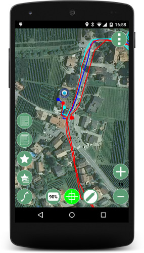
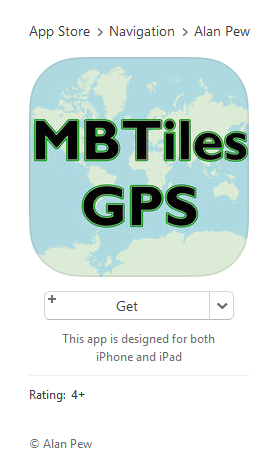

Extend Your ArcGIS Map Services With Mapbox Tools
Nick Peihl, San Juan County, WA
npeihl.com / @npeihl
Note, I don't work for Mapbox. I work for a small county off the western coast of Washington.
About Me
By name: County GIS Coordinator
But really: Developer, hacker, seeker
Member of Cascadia Users of Geospatial Open Source (CUGOS.org )
TileJSON
TileJSON is an open standard for representing map metadata.
Details
First, let's step aside and talk about the TileJSON-Spec. TileJSON was created by Mapbox as a method to represent map metadata.
TileJSON Example
{
"tilejson": "1.0.0",
"name": "OpenStreetMap",
"description": "A free editable map of the whole world.",
"version": "1.0.0",
"attribution": "(c) OpenStreetMap contributors, CC-BY-SA",
"scheme": "xyz",
"tiles": [
"http://a.tile.openstreetmap.org/${z}/${x}/${y}.png",
"http://b.tile.openstreetmap.org/${z}/${x}/${y}.png",
"http://c.tile.openstreetmap.org/${z}/${x}/${y}.png"
],
"minzoom": 0,
"maxzoom": 18,
"bounds": [ -180, -85, 180, 85 ]
}
ArcGIS Tiled Map Service as TileJSON
{
"tilejson": "2.1.0",
"name": "imagery2013",
"description": "Aerial imagery of San Juan County WA taken in 2013",
"version": "1.0.0",
"tiles": [
"http://sjcgis.org/arcgis/rest/services/Basemaps/Aerials_2013_WM/MapServer/tile/{z}/{y}/{x}"
],
"minzoom": 8,
"maxzoom": 19,
"bounds": [-123.256989,48.380882,-122.737885,48.827661],
"center": [-122.997437,48.604766]
}
Note how we add /tile/ and the z y and x placeholders to the Map Service URL. Also note the reverse placement of the {y} and {x} parameters for ArcGIS Server services.
Mapbox-GL-js Demo
Link
Loads as your typical orthogonal web map. But we can use Shift and Arrows to set pitch and bearing. Or we can generate random locations to fly to using the button, Island Hopping! The map style defines the layers to use. Each "source" is a snippet of TileJSON.
Mapbox-GL-Native Demo
Source code
The Mapbox GL Native SDK works with several operating systems including Android and iOS. Here's an example Android application using the TileJSON file we defined previously. I used Mapbox's First Steps to create this very basic app. You can use two finger touch gestures to zoom in and out, rotate the map or even "shove" the map to set the pitch.
Go Offline with MBTiles
At the County we're experimenting with solutions to get around this dis-connectivity issue.
MBTiles
MBTiles is a specification for storing tiled map data in SQLite databases for immediate usage and for transfer.
Details
MBTiles was created by Mapbox for storing tiled maps.
Tilelive
Tilelive is a module to help interactions between tilelive source modules.
Details
TileJSON is one of many tilelive sources. MBTiles is another source.
TileJSON ---> MBTiles
We're going to use Tilelive to copy the raster tiles from the TileJSON file to a portable MBTiles database.
Download Demo
Source code
I've written a script to download all the raster tiles using Node.js libraries. This script already has our TileJSON file. The TileJSON and MBTiles protocols are registered with Tilelive. Notice how only the tiles referenced within the bounds and min/max zooms specified in the TileJSON file are downloaded. I could set the maxzoom to 19 to get all levels but that would take hours to download.
Adhere to usage restrictions and licenses
Some aerial imagery or basemaps are protected by copyright or other restrictions. Do your homework and make sure you aren't violating those.
Limit your bounds and maxzoom
Don't get greedy. Limit the bounds and max zoom only to what you need. Otherwise you're hammering servers and will quickly run into usage limits or IP bans.
Ways to Use MBTiles
Upload to Mapbox Studio
Mobile Apps for Field Work
You can use your new MBTiles basemap directly in Mapbox Studio. You can also load it in mobile apps that support MBTiles.
Mapbox Studio Demo
Mapbox Studio
Open Mapbox Studio and click the Data tab. Select New dataset then upload the MBTiles database created from the earlier download. Once it finishes uploading you can use it in a style that can be referenced from other apps.
Mobile App Demos

Geopaparazzi
There are many free and paid apps for both Android and iOS that support viewing raster MBTiles. Geopaparazzi and MBTiles GPS are two examples. Geopaparazzi is an open source app for Android that allows you to show one MBTiles layer at a time.

MBTiles GPS
MBTiles GPS is no cost, but proprietary. It can show layers from multiple MBTiles databases at the same time. So you could add a reference overlay over top the aerial imagery as seen on our app here.
Map Service Requirements
Cached
Web Mercator (EPSG:3857)
Default Tile Scheme
To use these workflows the map service must be cached using the Web Mercator coordinate system and the default tiling scheme in ArcGIS Server.